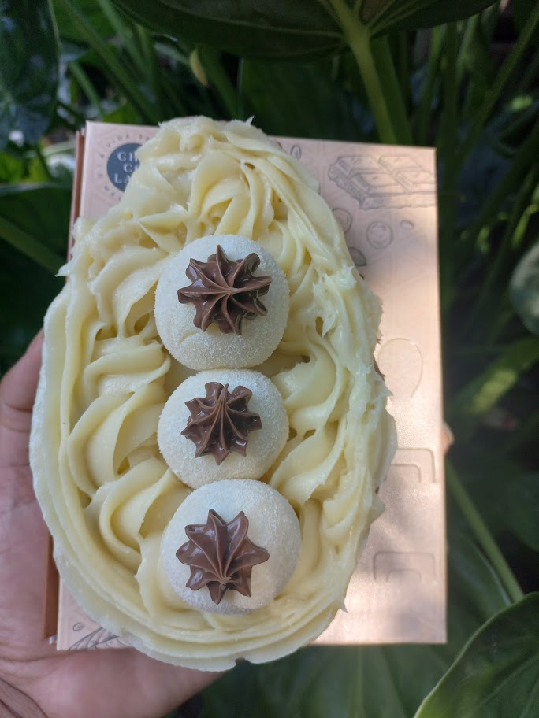
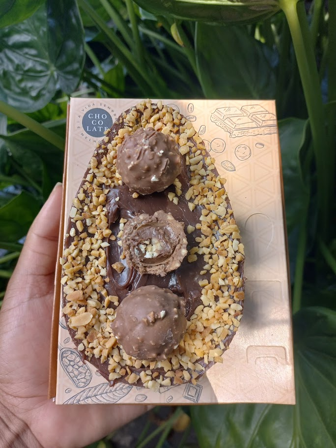
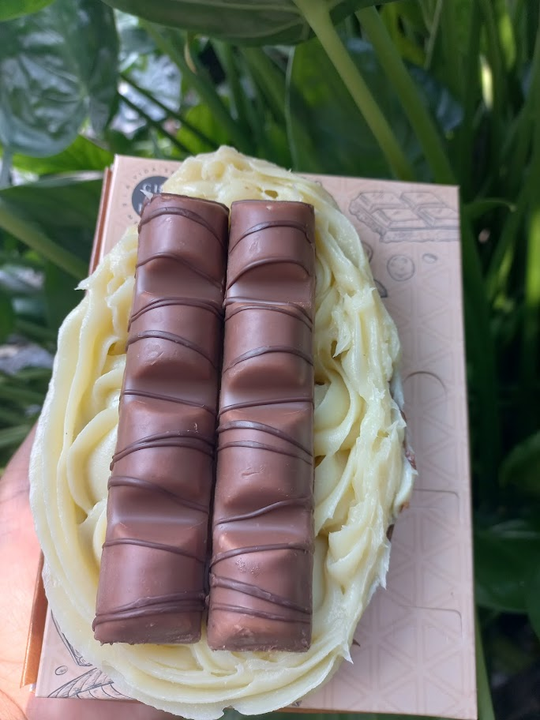

Bem-vindo ao nosso site de confeitaria! Aqui, você encontrará os melhores produtos de confeitaria, feitos com os ingredientes mais frescos e de alta
qualidade. Nossa equipe de confeiteiros altamente qualificados está comprometida em oferecer a você os melhores doces, bolos e sobremesas que você já
experimentou. Cada produto é cuidadosamente preparado à mão, com atenção aos detalhes e ao sabor. Nós acreditamos que a confeitaria é uma forma de arte
culinária, e nos esforçamos para criar produtos bonitos e deliciosos que vão encantar seus olhos e seu paladar. Desde clássicos como tortas de frutas e
cupcakes até criações modernas e ousadas, temos algo para todos os gostos. Não importa se você precisa de um bolo para uma ocasião especial, um doce para
o seu café da manhã ou uma sobremesa para impressionar seus amigos e familiares, temos o produto perfeito para você. Nós também oferecemos opções para dietas
especiais, como produtos sem glúten e sem lactose. Encomendar nossos produtos é fácil e rápido, e garantimos que você ficará satisfeito com cada mordida.
Nós também oferecemos entrega em domicílio para sua conveniência. Não se contente com produtos de confeitaria comuns - experimente o melhor. Confie em nós
para fornecer os produtos mais saborosos e de alta qualidade que você já experimentou. Nós estamos ansiosos para satisfazer seu paladar com nossas deliciosas
criações!
Conheça nossos produtos de Páscoa 2023

Ovo de colher leite ninho com nutella
O ovo de colher de leite ninho com nutella é uma sobremesa irresistível e deliciosa que é uma mistura perfeita de sabores. O ovo é feito de um rico
chocolate ao leite, moldado em uma forma de ovo de Páscoa e preenchido com um creme de leite ninho e nutella cremoso e indulgente. Ao cortar o ovo de
colher, a surpresa começa com o creme branco e cremoso de leite ninho e nutella espalhando-se suavemente sobre o chocolate. O sabor doce e suave do leite
ninho é acentuado pelo sabor intenso e rico do chocolate ao leite, enquanto a nutella adiciona uma nota aveludada de avelãs torradas. Este ovo de
é uma sobremesa decadente e luxuosa que é perfeita para compartilhar com amigos e familiares, ou para desfrutar sozinho. Cada mordida é uma combinação
perfeita de texturas e sabores, fazendo deste ovo de colher de leite ninho com nutella uma experiência verdadeiramente deliciosa e satisfatória.

Ovo de colher de Ferrero Roche
O ovo de colher de Ferrero Rocher é uma sobremesa de dar água na boca que é uma mistura perfeita de sabores luxuosos. O ovo é feito de um
premium de alta qualidade, moldado em uma forma de ovo de Páscoa e preenchido com um creme de avelã Ferrero Rocher cremoso e indulgente.
Ao cortar o ovo de colher, a surpresa começa com o creme de avelã Ferrero Rocher espalhando-se suavemente sobre o chocolate. O sabor rico e cremoso
da avelã é acentuado pelo sabor intenso e rico do chocolate premium, enquanto os pequenos pedaços crocantes de avelã adicionam uma textura agradável
e uma nota adicional de sabor. Este ovo de colher é uma sobremesa luxuosa e sofisticada que é perfeita para compartilhar com amigos e familiares ou para
desfrutar sozinho. Cada mordida é uma combinação perfeita de texturas e sabores, fazendo deste ovo de colher de Ferrero Rocher uma experiência verdadeiramente
deliciosa e satisfatória.

Ovo de colher de Kinder Bueno
O ovo de colher de Kinder Bueno é uma sobremesa deliciosa e luxuosa que é uma mistura perfeita de sabores incríveis. O ovo é feito de um chocolate
ao leite de alta qualidade, moldado em uma forma de ovo de Páscoa e recheado com um creme de avelã Kinder Bueno cremoso e indulgente.
Ao cortar o ovo de colher, a surpresa começa com o creme de avelã Kinder Bueno suavemente espalhando-se pelo chocolate. O sabor doce e cremoso
da avelã é acentuado pelo sabor intenso e rico do chocolate ao leite, enquanto os pequenos pedaços crocantes de wafer adicionam uma textura crocante
e uma nota adicional de sabor. Este ovo de colher é uma sobremesa indulgente e sofisticada que é perfeita para compartilhar com amigos e familiares,
ou para desfrutar sozinho. Cada mordida é uma combinação perfeita de texturas e sabores, fazendo deste ovo de colher de Kinder Bueno uma experiência
verdadeiramente deliciosa e satisfatória.
Conheça nossos bolos
O prazer de um bolo recheado é uma combinação de diferentes texturas e sabores que se unem em uma mordida. O primeiro sabor que se sente é o doce do bolo,
seguido do sabor do recheio que pode ser de diversas opções como chocolate, doce de leite, creme de baunilha, entre outros. O recheio adiciona uma camada
adicional de sabor e cremosidade que complementa o bolo. Além do sabor, a textura também é importante para a experiência do bolo recheado. A textura macia
e fofa do bolo é equilibrada com a cremosidade do recheio, criando uma combinação que é agradável ao paladar. A sensação de saborear a massa do bolo e sentir
o recheio cremoso derretendo na boca é uma experiência única que muitos desejam repetir. Além disso, o bolo recheado é frequentemente utilizado em comemorações
especiais, como aniversários e casamentos, o que adiciona um elemento de celebração e alegria à experiência de saborear um bolo recheado. Em resumo, o prazer
de um bolo recheado é a combinação de sabores e texturas que se unem em uma única mordida, proporcionando uma experiência única e deliciosa para o paladar.